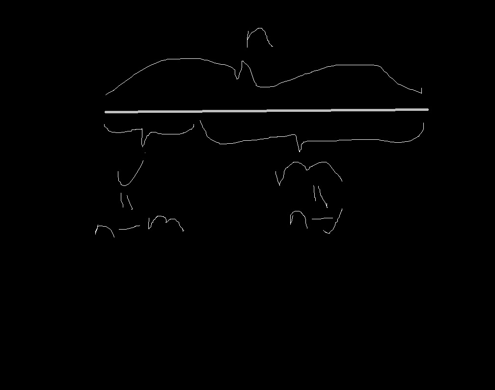

1. Arrays
1.1 Array Operation - Summary
- Read \((1)\)
- Search \((n)\)
- Insert \((n+1)\)
- Delete \((n)\)
1.2 Array Operation - Details
1.2.1 Read \((1)\):
- \(1\) (worse)
- \(1\) (best)
1.2.2 Search \((n)\):
- \(n\) (worse: target is last value found)
- \(1\) (best: target is first value found)
1.2.3 Delete \((n)\):
1.2.3a Delete \((n)\) - Worse:
{\(n\)}=({\(1\)} \(+\) {\(n-1\)}): worse - delete \(first\) item or \(arr[0]\):
{\(1\)}: delete item at \(arr[0]\)
{\(n-1\)}: shift whole array, left one item at a time:
- \(arr[1] \to arr[0]\) (\(index\_1 \to index\_0\))
- \(arr[2] \to arr[1]\) (\(index\_2 \to index\_1\))
- \(...\)
- \(arr[n] \to arr[n-1]\) (\(inde`x\_[n] \to index\_[n-1]\))
1.2.3b Delete \((1)\) - Best
{\(1\)}: best - delete \(last\) item or \(arr[-1]\)
1.2.4 Insert \((n+1)\)
1.2.4a Insert \((n+1)\) - Worse:
{\(n + 1\)}: worse - insert at \(front\) or \(arr[0]\):
{\(n\)}: whole existing array of length {\(n\)} needs to move right by {\(1\)}:
- starts at {\(n\)}, moves it right to {\(n+1\)}
- then {\(n-1\)} moves to {\(n\)}… {\(n\_times\)} or {\(n\_steps\)}
- index \([0]\) becomes empty
- index \([0]\) retains same memory address (might change for diff languages)
{\(1\)}: insert the finally vacant spot at index 0, same memory address
1.2.4b Insert \((1)\) - Best:
{\(1\)}: best - insert at \(end\) or \(arr[-1]\):
Computers may have to allocate additional memory cells toward this array (language specific)
2. Array-Based Sets
A data stucture that does not allow duplicates values within it.
Useful: data without duplicates (e.g.online phonebook)
2.1 Classic Arrays vs Array-Based Sets - Differences
An array-based set:
- is an array
- with one additional constraint
- of barring duplicates
2.2 Classic Arrays vs Array-Based Sets - Operations Comparison Table
| Operation | Array | Array-Based Set | Difference | Change |
|---|---|---|---|---|
| Read | \(O(1,1)\) | \(O(1,1)\) | Same | None |
| Search | \(O(1,n)\) | \(O(1,n)\) | Same | None |
| Delete | \(O(1,n)\) | \(O(1,n)\) | Same | None |
| Insert | \(O(1,n+1)\) | \(O(n+1,n*n+1)\) or \(O(n+1,2n+1)\) |
\(O(worse,worse)\) | \(O_{best}(1 \to n+1)\) and \(O_{worse}(n+1 \to 2n+1)\) |
2.3 Array-Based Set Operation - Detailed
2.3.1 Read \((1)\), Search \((n)\), Delete \((n)\)
- Read \((1,1)\)
- Search \((1,n)\)
- Delete \((1,n)\)
- Insert \((n+1,2n+1)\)
2.3.2 Insert \((2n+1)\): Different to Classic Arrays
2.3.2a Insert \((2n+1)\) - Worse
{\(n*n+1\)} - worse, insert at the \(front\):
{\(n\)}: search whole array {\(n\_times\)}
{\(n\)}: shift whole array, right (one-item-at-a-time) i.e. {\(n\_times\)}:
- \(arr[n] \to arr[n+1]\) (\(index\_[n] \to index\_[n+1]\))
- \(arr[n-1] \to arr[n]\) (\(index\_[n-1] \to index\_[n]\))
- \(...\)
- \(arr[0] \to arr[1]\) (\(index\_[0] \to index\_[1]\))
- \(arr[n] \to arr[n+1]\) (\(index\_[n] \to index\_[n+1]\))
{\(1\)}: insert at index 0, same memory address
2.3.2b Insert \((n+1)\) - Best
{\(n+1\)} - best, insert at the \(end\):
- Search array (for dupes) + insert (at end)
2.3.2c Insert \((m*n+1)\) - Medium
{\(m*n+1\)} - medium, insert at the \(arr[j]\) or \(index\_[j]\)):
{\(n\)}: search whole array {\(n\_times\)}
{\(m\)}: shift whole array {\(n\_times\)} where {\(m\)} \(=\) {\(n-j\)}:
- if want to insert at \(index\_[j]\): all items after \(index\_[j]\) by one
- thus we shift right {\(m\)} \(=\) {\(n-j\)} items
- \(arr[n] \to arr[n+1]\) (\(index\_[n] \to index\_[n+1]\))
- \(...\)
- \(arr[j] \to arr[j+1]\) (\(index\_[j] \to index\_[j+1]\))
- or
- \(arr[n-m] \to arr[n-m+1]\) (\(index\_[n-m] \to index\_[n-m+1]\))
{\(1\)}: insert at \(arr[j]\) or \(arr[n-m]\)
2.3.3 Inserting at \(arr[j]\) hand-drawn
